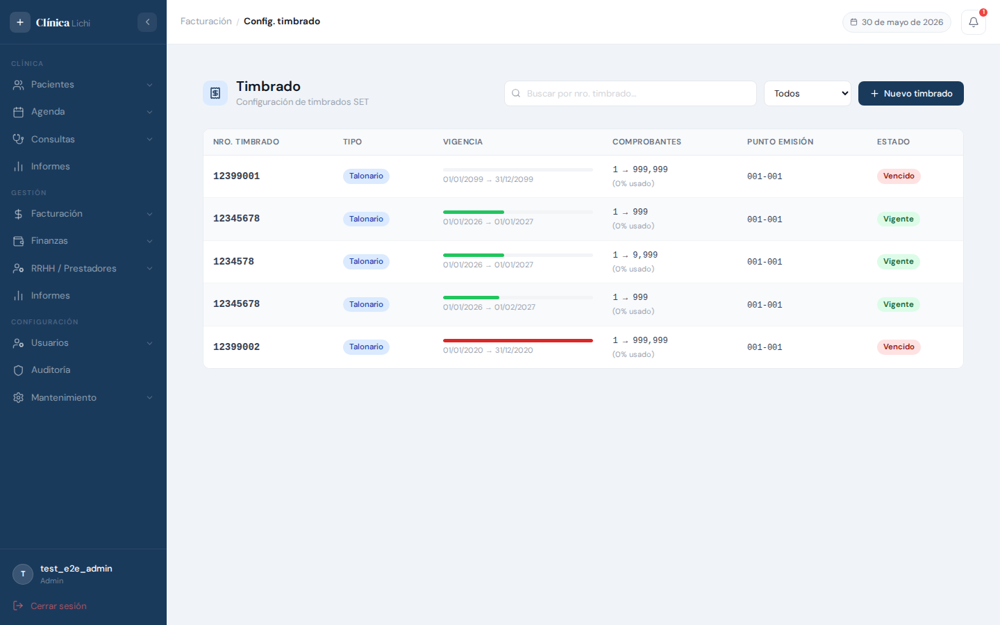
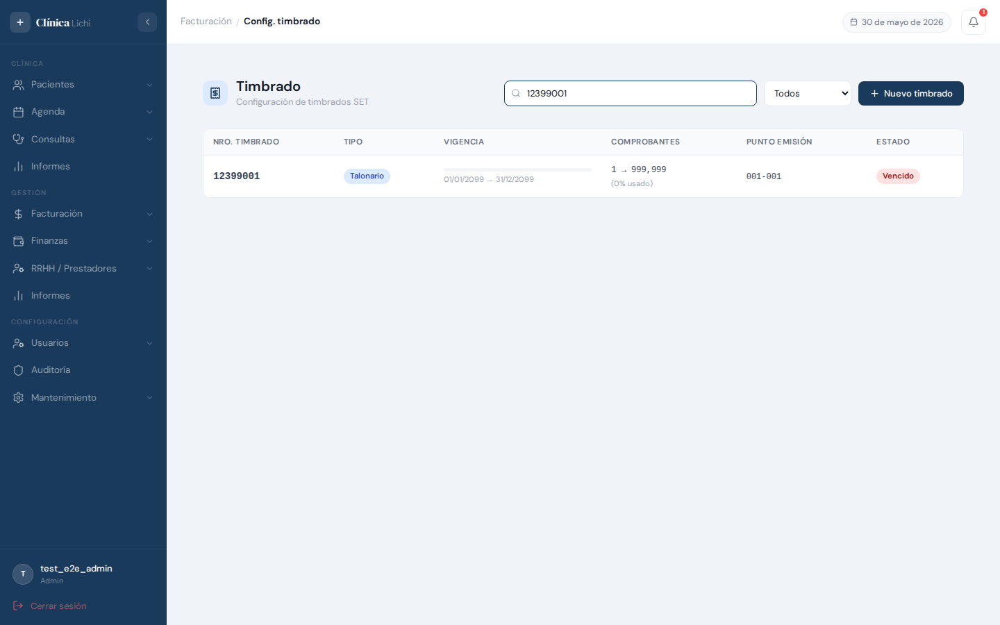
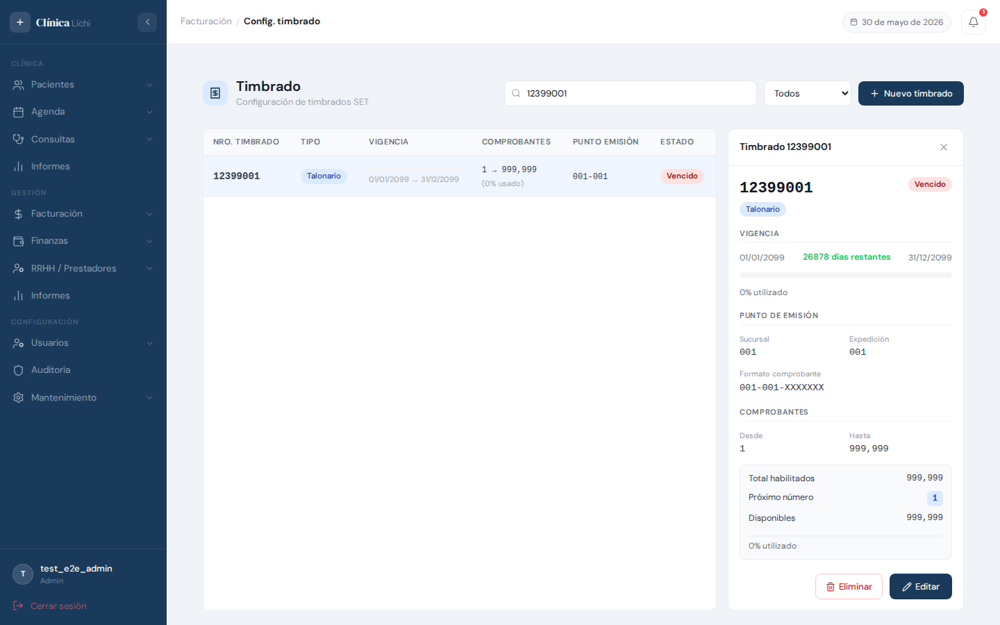
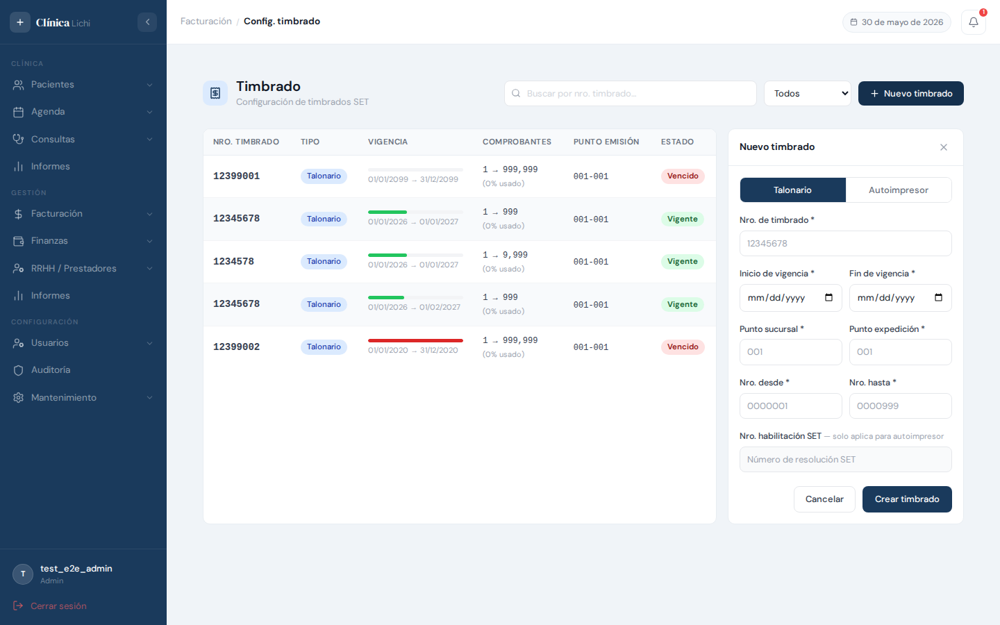
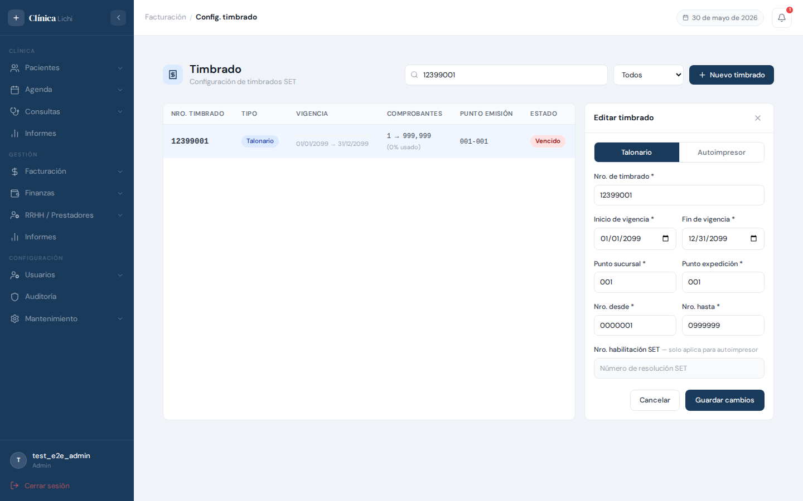
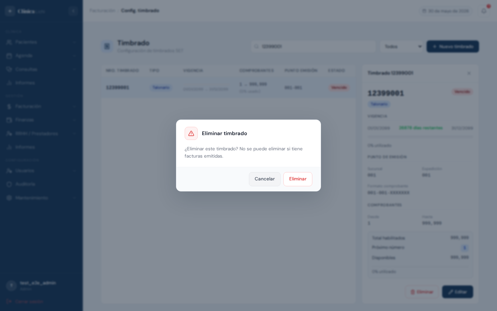
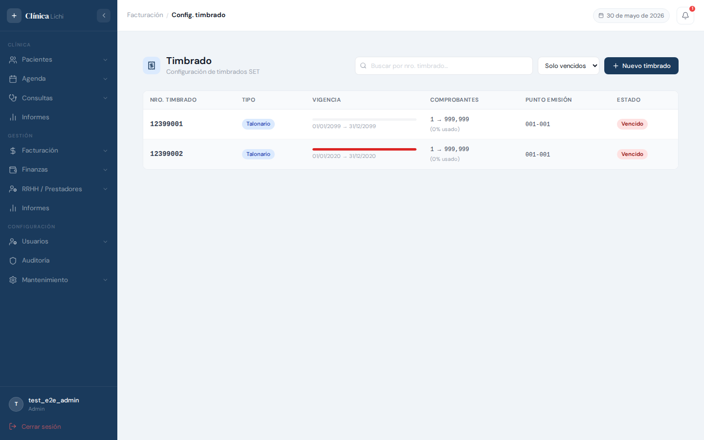

Descripción del módulo
El módulo Timbrado administra las autorizaciones de la SET (Subsecretaría de Estado de Tributación) que habilitan a la clínica a emitir comprobantes fiscales. Cada timbrado define el número de autorización, el período de vigencia, el rango de números de comprobante habilitados y el punto de emisión (sucursal y expedición).
Sin un timbrado vigente, el sistema no puede generar facturas. Por eso es importante mantener este módulo actualizado antes de que venzan los timbrados activos.
Permisos por rol
| Acción | Administrador | Recepcionista | Médico | Secretaria médico |
|---|---|---|---|---|
| Ver listado de timbrados | ✅ | ✅ | — | — |
| Ver detalle de un timbrado | ✅ | ✅ | — | — |
| Registrar nuevo timbrado | ✅ | — | — | — |
| Editar timbrado | ✅ | — | — | — |
| Eliminar timbrado | ✅ | — | — | — |
Acceder al módulo
El módulo de Timbrado se encuentra en el menú lateral bajo el grupo Facturación.
- Iniciá sesión en el sistema con tu usuario y contraseña.
- En el menú lateral izquierdo, hacé clic en Facturación para expandir el grupo.
- Seleccioná Timbrado dentro del grupo.
- La pantalla principal carga automáticamente con todos los timbrados registrados.
Pantalla principal — listado

La pantalla principal muestra la tabla de timbrados junto con una barra de búsqueda, un filtro de vigencia y el botón + Nuevo timbrado (solo visible para administradores).
Cada fila de la tabla contiene:
| Columna | Contenido |
|---|---|
| Nro. Timbrado | Número de autorización de la SET, en tipografía monoespaciada. |
| Tipo | Talonario para comprobantes físicos, Autoimpresor para sistemas de impresión propia con resolución SET. |
| Vigencia | Barra de progreso que muestra visualmente cuánto del período de vigencia ha transcurrido, junto con las fechas de inicio y fin. |
| Comprobantes | Rango habilitado (nro. desde → nro. hasta) y porcentaje de números ya utilizados. |
| Punto emisión | Código de sucursal y expedición en formato 001-001. |
| Estado | Vigente si la fecha actual está dentro del período, Vencido si la fecha de fin ya pasó. |
Buscar y filtrar timbrados

Búsqueda por número
El campo de texto busca por número de timbrado o por número de habilitación SET (para autoimpresor). La búsqueda aplica con un breve retardo automático mientras se escribe; no es necesario presionar Enter.
Filtro por estado
El selector desplegable junto al buscador filtra por estado de vigencia:
| Opción | Muestra |
|---|---|
| Todos | Todos los timbrados activos (vigentes y vencidos). Valor por defecto. |
| Vigentes | Solo timbrados cuya fecha de fin es posterior a hoy. |
| Expirados | Solo timbrados cuya fecha de fin ya pasó. |
Ver detalle de un timbrado

Al hacer clic en cualquier fila se abre el panel lateral de detalle. Para cerrarlo, hacé clic en la X del encabezado o clic nuevamente en la misma fila.
Información mostrada
| Sección | Datos |
|---|---|
| Encabezado | Número de timbrado en grande, tipo (Talonario / Autoimpresor) y estado (Vigente / Vencido). |
| Vigencia | Fechas de inicio y fin, días restantes (o hace cuántos días venció), barra de progreso y porcentaje transcurrido. |
| Punto de emisión | Sucursal, expedición y el formato completo del comprobante (001-001-XXXXXXX). |
| Comprobantes | Rango habilitado (desde / hasta), total habilitados, próximo número a emitir, disponibles restantes y barra de uso. |
| Habilitación SET | Número de resolución (solo aparece en timbrados tipo Autoimpresor). |
Botones de acción
Solo visibles para el rol Admin:
- Editar — abre el formulario de edición con los datos precargados.
- Eliminar — abre un diálogo de confirmación antes de borrar.
Registrar un nuevo timbrado

- Hacé clic en el botón + Nuevo timbrado en la parte superior derecha.
- Se abre el panel lateral con el formulario de creación.
- Completá todos los campos requeridos (marcados con *).
- Hacé clic en Crear timbrado para guardar.
Campos del formulario
| Campo | Descripción | Formato |
|---|---|---|
| Tipo * | Seleccioná Talonario (estándar) o Autoimpresor (requiere resolución SET). | Botón de selección |
| Nro. de timbrado * | Número de autorización tal como aparece en el documento de la SET. Solo dígitos numéricos, máximo 8 caracteres. | 12345678 |
| Inicio de vigencia * | Fecha desde la cual el timbrado es válido. | DD/MM/AAAA |
| Fin de vigencia * | Fecha hasta la cual el timbrado es válido. Debe ser posterior al inicio. | DD/MM/AAAA |
| Punto sucursal * | Código de sucursal del punto de emisión. Exactamente 3 dígitos. Se completa automáticamente con ceros al perder el foco. | 001 |
| Punto expedición * | Código de expedición del punto de emisión. Exactamente 3 dígitos. | 001 |
| Nro. desde * | Primer número de comprobante habilitado. Se completa con ceros a la izquierda (7 dígitos). | 0000001 |
| Nro. hasta * | Último número habilitado. Debe ser mayor al número desde. | 0999999 |
| Nro. habilitación SET | Número de resolución de la SET. Requerido únicamente para timbrados tipo Autoimpresor. | Texto libre |
Completado automático de campos numéricos
Los campos Punto sucursal, Punto expedición, Nro. desde y Nro. hasta se completan automáticamente con ceros a la izquierda al hacer clic fuera del campo. Por ejemplo: ingresar 1 en Punto sucursal y hacer clic fuera produce 001.
Editar un timbrado

- Hacé clic en la fila del timbrado que querés editar para abrir el panel de detalle.
- Hacé clic en el botón Editar en la parte inferior del panel.
- El panel cambia al formulario de edición con todos los datos precargados.
- Modificá los campos necesarios y hacé clic en Guardar cambios.
nro_timbrado) de un timbrado que ya tiene facturas emitidas, ya que quedarían facturas con un número de timbrado que no coincide con el registro actual.Eliminar un timbrado

- Hacé clic en la fila del timbrado para abrir el panel de detalle.
- Hacé clic en el botón Eliminar en la parte inferior del panel.
- Aparece un diálogo de confirmación que indica que no se puede eliminar si tiene facturas emitidas.
- Hacé clic en Eliminar para confirmar, o en Cancelar para volver sin cambios.
El borrado es lógico — el registro no se borra físicamente de la base de datos, solo queda marcado como eliminado y deja de aparecer en el listado.
Vigencia y progreso de uso
Tanto en la tabla como en el panel de detalle, el sistema muestra indicadores visuales que permiten saber de un vistazo el estado de cada timbrado.
Barra de vigencia
La barra de progreso en la columna Vigencia representa cuánto del período autorizado ha transcurrido. El color indica la urgencia:
Barra de uso de comprobantes
En el panel de detalle, una segunda barra muestra el porcentaje de números de comprobante ya utilizados dentro del rango habilitado.

Cuándo renovar el timbrado
Se recomienda gestionar la renovación ante la SET cuando:
- La barra de vigencia esté en color naranja (menos de 180 días).
- El porcentaje de comprobantes utilizados supere el 80%.
- El badge de estado muestre Vencido.
Mensajes de error frecuentes
| Mensaje o situación | Causa y solución |
|---|---|
| "Ya existe un timbrado activo con el mismo número, fechas de vigencia y punto de emisión." | Se está intentando registrar un timbrado idéntico a uno ya existente. Verificá si ya fue cargado o corregí alguno de los campos que lo diferencie (rango de comprobantes, punto de emisión, etc.). |
| "Debe ser exactamente 3 dígitos numéricos (ej: 001)." | Los campos Punto sucursal y Punto expedición requieren exactamente 3 dígitos. Ingresá el valor sin letras ni espacios; el sistema agrega los ceros automáticamente al salir del campo. |
| "La fecha de fin debe ser posterior a la de inicio." | La fecha de fin de vigencia es anterior o igual a la de inicio. Corregí las fechas. |
| "El número hasta debe ser mayor al número desde." | El rango de comprobantes está invertido. El campo Nro. hasta debe ser mayor al Nro. desde. |
| "Requerido para timbrado autoimpresor." | Al seleccionar el tipo Autoimpresor, el campo Nro. habilitación SET pasa a ser obligatorio. Ingresá el número de resolución otorgado por la SET. |
| "No se puede eliminar: tiene facturas activas vinculadas." | El timbrado tiene facturas emitidas asociadas. No es posible eliminarlo. Para retirarlo del uso activo, dejá que venza naturalmente o no lo selecciones al emitir nuevas facturas. |
| El botón Nuevo timbrado no aparece | El usuario no tiene rol Administrador. Solo los administradores pueden crear timbrados. |
| Los botones Editar y Eliminar no aparecen en el panel | El usuario no tiene rol Administrador. Los recepcionistas pueden ver el detalle pero no modificar los timbrados. |
| El timbrado aparece como Vencido pero las fechas parecen correctas | El sistema compara con la fecha del servidor. Verificá que la fecha de fin de vigencia sea posterior a la fecha actual del servidor (no la del equipo local). |
| El campo Nro. habilitación SET está deshabilitado | Este campo solo se activa cuando el tipo seleccionado es Autoimpresor. Si el timbrado es de tipo Talonario, este campo no aplica y permanece bloqueado. |
- Ingresá al módulo Facturación → Timbrado.
- Hacé clic en + Nuevo timbrado.
- Seleccioná el tipo (Talonario o Autoimpresor) según el documento de la SET.
- Ingresá el número de timbrado, el período de vigencia y el rango de comprobantes exactamente como figuran en la autorización.
- Configurá el punto de emisión (
001-001para una única sucursal). - Hacé clic en Crear timbrado y verificá que el estado quede como Vigente.